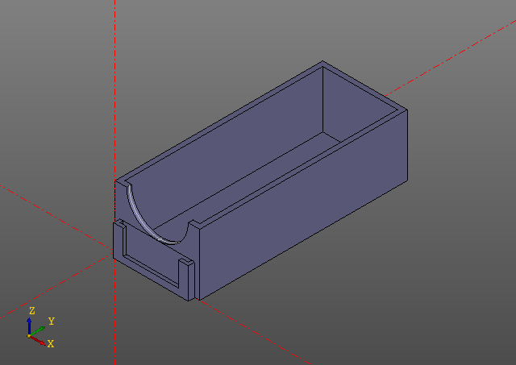

#!/usr/bin/env python3.5
#coding: utf-8
from zencad import *
enable_cache(".cache")
def section(w, h, l, t, d, d2):
return (
box(2*t+w, t+l, 2*t+h)
- box(w, l, h).translate(t,0,t)
- box(w-2*d,l,h+2*t).translate(t+d,0,0)
- box(w,l+t,h-d2).translate(t,0,d2+t)
)
#n, m - параметры матрицы.
#w,h,l - параметры нишы.
#t - толщина стенок.
#d - выступ поддержки.
#d2 - высота заднего бампера.
def storage(m, n, w, h, l, t, d, d2):
arr = []
sect = section(w,h,l,t,d,d2)
b1 = box(w*m+t*(m+1), l+t, t)
b2 = box(w*m + t*(m+1),l+t,t)
for i in range(0, n):
for j in range(0, m):
arr.append(sect.translate(j*(w+t),0,i*(h+t)))
arr.append(b2.translate(0,0,h*n+t*n))
arr.append(b1)
return union(arr)
m = storage(3,3,27,20,64,1.5,5,5)
display(m)
show()
#!/usr/bin/env python3.5
#coding: utf-8
from zencad import *
def case(w,h,l,t,r,z,s):
w = w*s;
h = h*0.95;
return (
box(w,l,h)
- box(w-2*t, l-2*t,h-t).translate(t,t,t)
- cylinder(r=r,h=t+1).rotateX(gr(90)).translate(w/2,t+0.5,h)
+ box(w-2*t, z*2, h-r).translate(t,-z*2,0)
- box(w-2*t-2*z, z, h-r-z).translate(t+z,-z,z)
- box(w-2*t-6*z, z, h-r-2*z).translate(t+z*3,-2*z,2*z)
)
m = case(w=27,h=20,l=64,t=1.5,r=27/2-4,z=1,s=0.965);
display(m)
show()